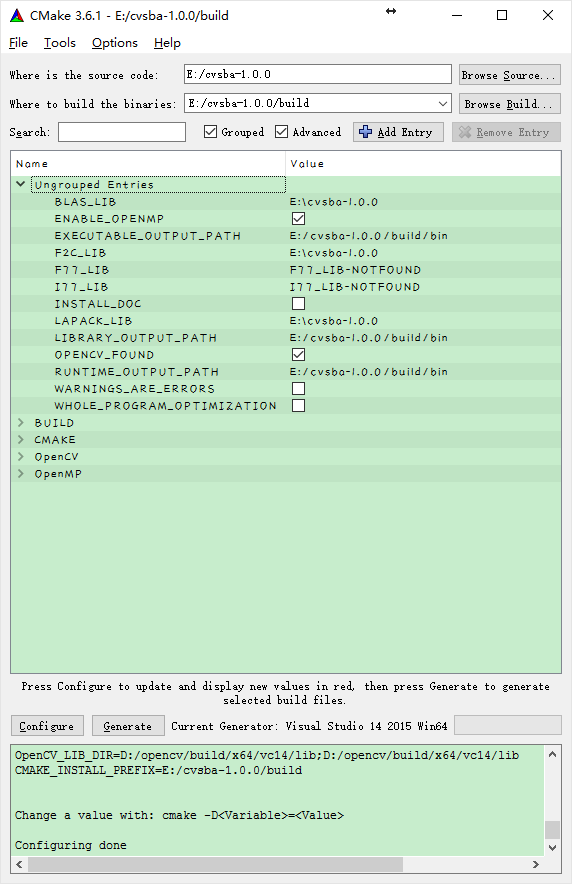
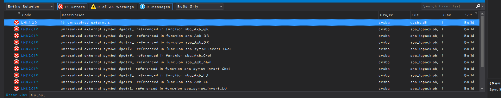
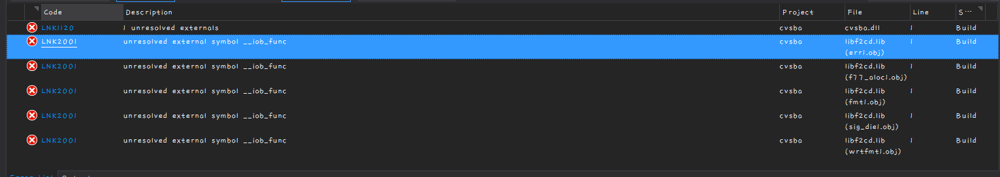
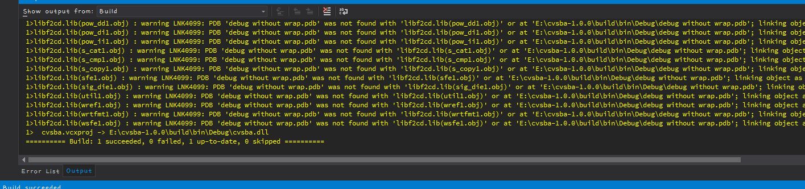
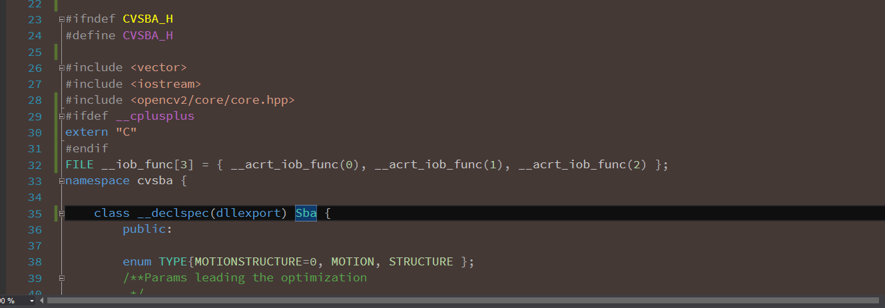
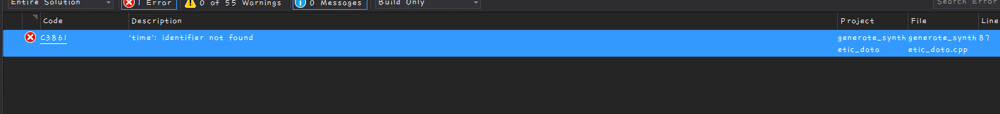
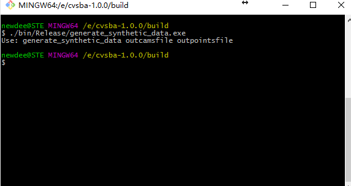
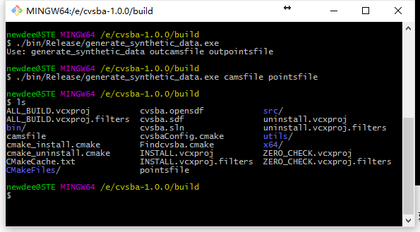
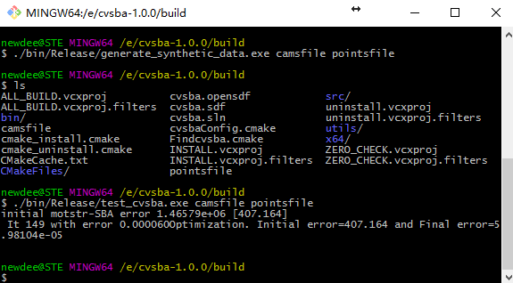

cvsba编译（VS2015下的编译与测试）
由于之前师兄所用的sba（光束法平差）库是10版本编译的，现在我用的是15版本，而且15的版本相对于以前变化不少，之前也参照过网上的一篇13版本的编译过程，不过一直出错，后来调试很长时间，终于生成成功，这里mark一下。
- 首先下载cvsba的source code：
网址是https://sourceforge.net/projects/cvsba/files/1.0.0/
下載的是cvsba-1.0.0，目前依然是这个版本。
然后解压放到对应目录文件夹，依个人喜好。我的是E:\cvsba-1.0.0
- 编译
这里需要一些工具，cmake自然不用多说，还有opencv的依赖，所以事先需要下载opencv，这个不做过多赘述。
我这里使用的cmake版本是3.6.1
然后打开cmake，选择源文件夹和输出文件夹，尽量不要是一个，方便一点可以在E:\cvsba-1.0.0目录下再建一个bulid文件夹存放。
然后config中选择v14，即2015版本。点击确定
一般会出现error，因为缺少一些lapack的库。由于编译lapack需要用到fortran编译器，这里没有，所以不再编译，直接从网上下载部分库文件，http://www.netlib.org/clapack/LIB\_WINDOWS/prebuilt\_libraries\_windows.html
下载clapack.lib, BLAS.lib, libf2c.lib共三个文件，放到E:\cvsba-1.0.0目录下。
然后修改错误，把LAPACK_LIB路径改成刚刚放置的位置，继续config，
继续修改，把BLAS_LIB路径改成刚刚放置的位置，继续config，
继续修改，把F2C_LIB路径改成刚刚放置的位置，其余的不用管，继续config，
编译成功。
然后generate一下。

然后用vs2015打开build文件夹下的cvsba.sln
点击cvsba，然后build，发现很多错误。首先是LIBCMT和MSVCRT的问题，在属性表中修改，debug模式中改为/MTd，release中改为/MT。
然后重新生成。
发现错误如下：

原因是没有加如相应的lib, 在程序中增加lib（Link ->input ）附加依赖项 clapack.lib blas.lib libf2c.lib，前面要加其所在文件夹，如E:\cvsba-1.0.0\clapack.lib，E:\cvsba-1.0.0\BLAS.lib，E:\cvsba-1.0.0\libf2c.lib（这是release下面的，debug下添加相应的带d的版本，即E:\cvsba-1.0.0\clapackd.lib，E:\cvsba-1.0.0\BLASd.lib，E:\cvsba-1.0.0\libf2cd.lib）
然后重新build，还有错误：
原因是15版本现在使用的是内联定义调用许多stdio.h中的函数。解决方法：
也是在链接中添加相应依赖库：
legacy_stdio_definitions.lib
重新build。

出现错误，原因也是VC6的stdio.h中未定义，手动在头文件中加入：
#ifdef __cplusplus
extern “C”
#endif
FILE __iob_func[3] = { __acrt_iob_func(0), __acrt_iob_func(1), __acrt_iob_func(2) };
继续build

成功。
但是进入debug中发现只有cvsba.dll文件，没有cvsba.lib文件，原因是cvsba..h里面的class声明少了 __declspec(dllexport) 把它加上去就可以了

Build，
成功
接下来测试生成的lib和dll文件是否完好。
直接build所有的项目，发现一个问题：

解决方法：
像该文件中加入#include<time.h>
至此，全部建立完成。
然后进入生成的文件夹运行，可以用windows的cmd也可以用bash，我这里直接用bash了：
需要先生成两个文件用于测试：

分别是camsfile和pointsfile，可以自己命名，但用于测试，就随便命名了。

可以看到已经多了两个文件。
然后运行test_cvsba:

测试成功，表示刚刚生成的cvsba.lib和cvsba.dll是没问题的。
至此，所有任务已经完成。